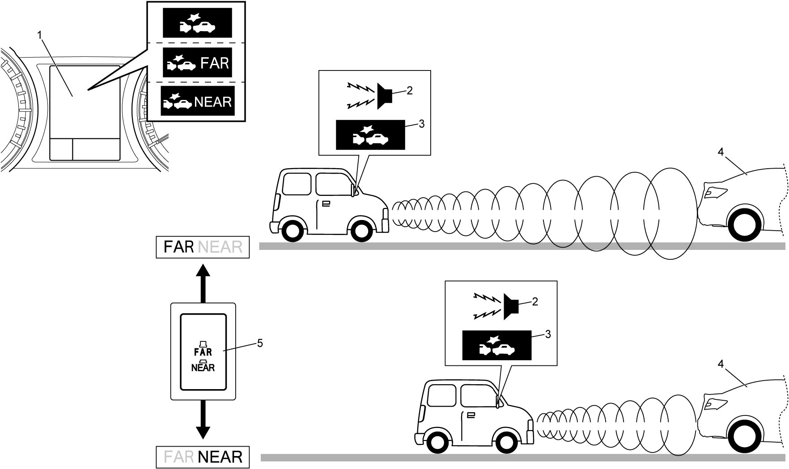
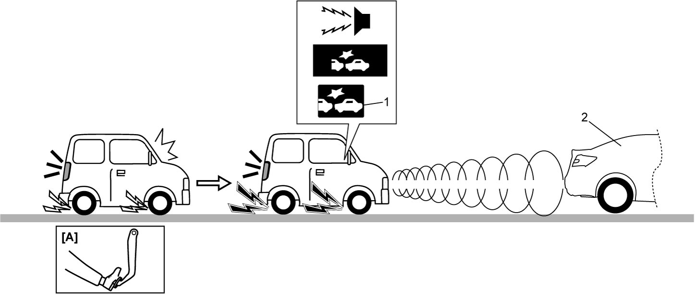
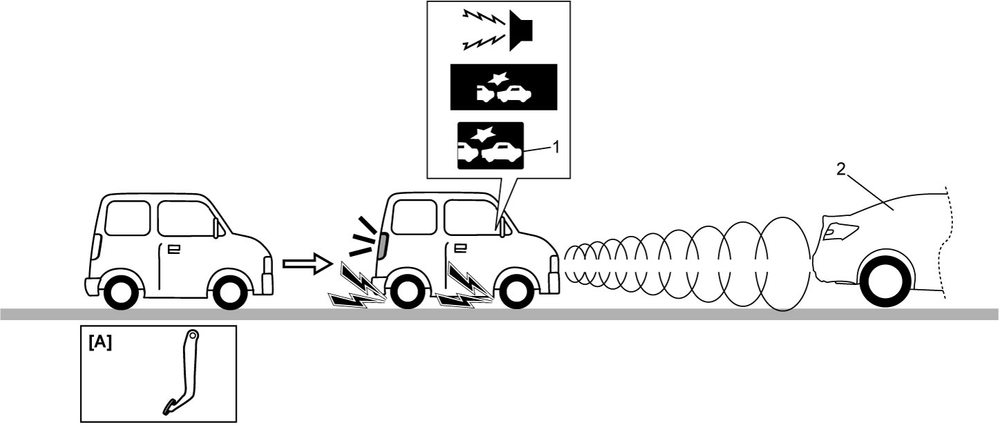

10J
| Description of RBS Function |
Frontal Collision Warning Function
When your vehicle is running at about 5 to 180 km/h (3 to 112 mile/h) and a vehicle ahead is also running, or your vehicle is running at about 5 to 80 km/h (3 to 50 mile/h) and a vehicle ahead is stopped, RBS control module detects the vehicle ahead (4) using the millimeter wave. If RBS control module judges hazardous state of a collision due to the fact that your vehicle is approaching the vehicle ahead, the system urges the driver’s attention to apply brake by sounding the buzzer (2) and displaying headway alert indication (3) on the information display (1) in the combination meter. When elimination of the collision potential is judged, the warning is canceled. On the other hand, the warning continues while the automatic brake or brake assist is still in operation.
The warning timing is switched by FAR/NEAR setting switch (5) to FAR (far distance) or NEAR (short distance). The switched position is displayed for 5 seconds on the information display.
NOTE:
•Warning of “NEAR” is emitted later than that of “FAR”.
•Switching FAR/NEAR setting switch does not change operation timing of the automatic brake function and the brake assist function.
•When the relative speed is low, the frontal collision warning function and automatic brake function could be activated at the same time
•Switching FAR/NEAR setting switch does not change operation timing of the automatic brake function and the brake assist function.
•When the relative speed is low, the frontal collision warning function and automatic brake function could be activated at the same time
Warning timing

 "Expand image")
Brake Assist Function
When your vehicle is running at about 5 to 180 km/h (3 to 112 mile/h) and RBS control module detects the driver’s hard braking condition from brake light switch signal, longitudinal G signal, etc., RBS control module detects the running vehicle ahead (2) using the millimeter wave, and if pressing collision hazard is judged due to insufficient brake pedal depressing pressure, RBS control module transmits brake assist control request to ESP® control module.
ESP® control module increases brake pressure by the pump motor and effects larger deceleration.
While the brake assist function is active, the frontal collision warning function emits alert and RBS indicator light (1) blinks.
NOTE:
Switching FAR/NEAR setting switch does not change operation timing of the brake assist function.

 "Expand image")
| [A]: | Hard braking |
Automatic Brake Function
•When your vehicle is running at about 5 to 30 km/h (3 to 19 mile/h) and RBS control module detects the vehicle ahead (2) using the millimeter wave and judges that a collision is inevitable, RBS control module transmits automatic brake control signal to ESP® control module. ESP® control module increases brake pressure by the pump motor and effects larger deceleration automatically.
While the automatic brake function is in operation, the frontal collision warning function emits alert and RBS indicator light (1) blinks.
Buzzer sound, blinking of RBS indicator light and indication of information display continue until your vehicle stops and the system releases brake.
•When your vehicle is running at about 30 to 180 km/h (19 to 112 mile/h) and RBS control module detects the running vehicle ahead (2) using the millimeter wave and judges that the collision is inevitable, RBS control module transmits automatic brake control signal to ESP® control module.
ESP® control module increases brake pressure activating the pump motor and effects small deceleration.
While the automatic brake function is in operation, the frontal collision warning function emits alert and RBS indicator light (1) blinks.
RBS control module continues deceleration control until avoidance of the collision is judged and degree of the deceleration is increased automatically when the vehicle is decelerated to 30 km/h (19 mile/h) or lower speed.
Buzzer sound, blinking of RBS indicator light and indication of information display continue until the system releases brake.
While the automatic brake function is in operation, the frontal collision warning function emits alert and RBS indicator light (1) blinks.
Buzzer sound, blinking of RBS indicator light and indication of information display continue until your vehicle stops and the system releases brake.
•When your vehicle is running at about 30 to 180 km/h (19 to 112 mile/h) and RBS control module detects the running vehicle ahead (2) using the millimeter wave and judges that the collision is inevitable, RBS control module transmits automatic brake control signal to ESP® control module.
ESP® control module increases brake pressure activating the pump motor and effects small deceleration.
While the automatic brake function is in operation, the frontal collision warning function emits alert and RBS indicator light (1) blinks.
RBS control module continues deceleration control until avoidance of the collision is judged and degree of the deceleration is increased automatically when the vehicle is decelerated to 30 km/h (19 mile/h) or lower speed.
Buzzer sound, blinking of RBS indicator light and indication of information display continue until the system releases brake.
NOTE:
•Switching FAR/NEAR setting switch does not change operation timing of the automatic brake function.
•When the relative speed is low, the frontal collision warning function and automatic brake function could be activated at the same time.
•While the automatic brake is in operation, ESP® control module turns the brake light ON.
•When the relative speed is low, the frontal collision warning function and automatic brake function could be activated at the same time.
•While the automatic brake is in operation, ESP® control module turns the brake light ON.

 "Expand image")
| [A]: | Brake pedal released |
Operation Principle
Each function works under the following conditions.
| Frontal collision warning function | Brake assist function | Automatic brake function | |
|---|---|---|---|
| Engine | Running | ||
| Vehicle speed |
•About 5 to 180 km/h (3 to 112 mile/h)
(vehicle ahead is also running) •About 5 to 80 km/h (3 to 50 mile/h) (vehicle ahead is stopped) |
About 5 to 180 km/h (3 to 112 mile/h) |
•About 5 to 30 km/h (3 to 19 mile/h)
•About 30 to 180 km/h (19 to 112 mile/h) (vehicle ahead is also running) |
| Brake pedal | Released | Depressed strongly | Released |
| System condition | ON (*1) | ||
| RBS indicator light | OFF | ||
| RBS OFF light | OFF | ||
| Gear shift lever (M/T model) | Other than neutral and reverse position | ||
| Select lever (A/T model) | Other than P and R range | ||
| Avoidance operation (*2) | Not operated | ||
NOTE:
•*1: RBS control is not disabled by operation of RBS OFF switch or ESP® OFF switch.
•*2: Operation of steering wheel or accelerator pedal exceeds the specified level.
•*2: Operation of steering wheel or accelerator pedal exceeds the specified level.